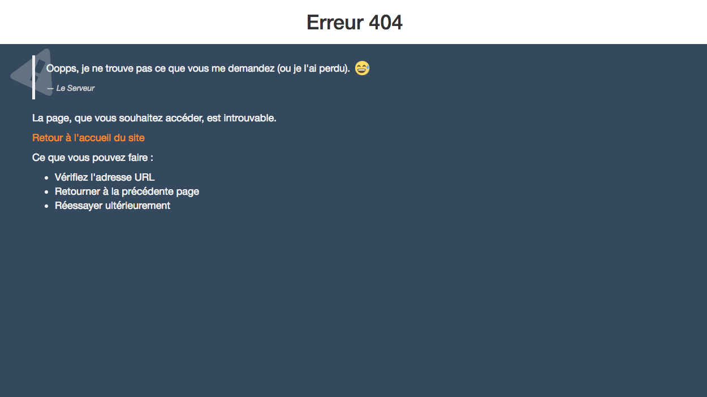

Le-serveur error page
Le-serveur error page est un pack de page html pour afficher les erreurs HTTP, ainsi qu'une page de maintenance index.html. L'affichage des erreurs se font d'une manière plus visuelle et un petit peu plus "fun". Votre serveur prend la parole. Tester pour voir ce qu'il nous raconte.

Installation
- Download the last version of Le-serveurEP
- Transfer the files on your server
- If you do not need maintenance page, do not transfer
index.html - If you already have a
.htaccess, add content to the end of your file
- If you do not need maintenance page, do not transfer
Contributing
- Fork it!
- Create your feature branch:
git checkout -b my-new-feature - Commit your changes:
git commit -am 'Add some feature' - Push to the branch:
git push origin my-new-feature - Submit a pull request :D
TODO
- [ ] Add multilanguage version
- [ ] Add another errors pages
Credits
- Author : Dezodev
- Version : 0.1.0
- Include : Bootstrap, Emojione
License
GNU GENERAL PUBLIC LICENSE Version 3, 29 June 2007
You may copy, distribute and modify the software as long as you track changes/dates in source files. Any modifications to or software including (via compiler) GPL-licensed code must also be made available under the GPL along with build & install instructions.